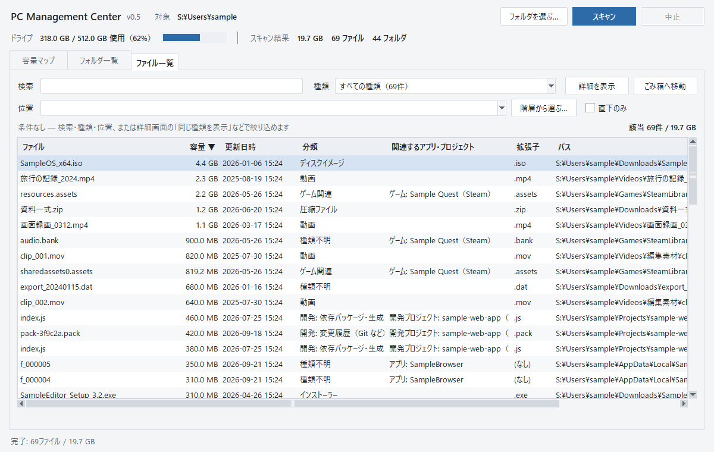
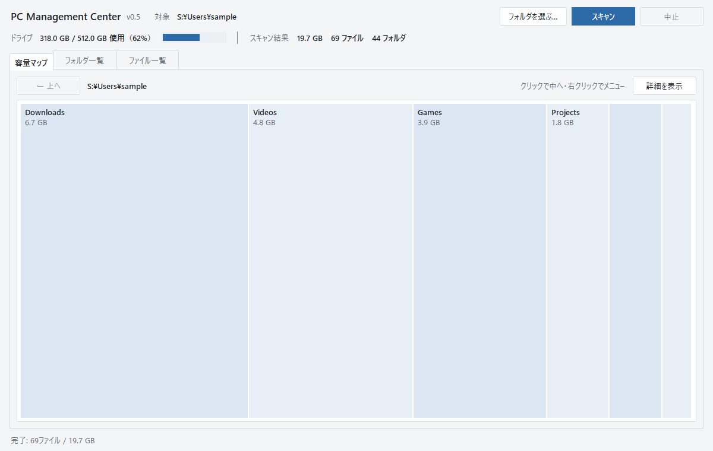
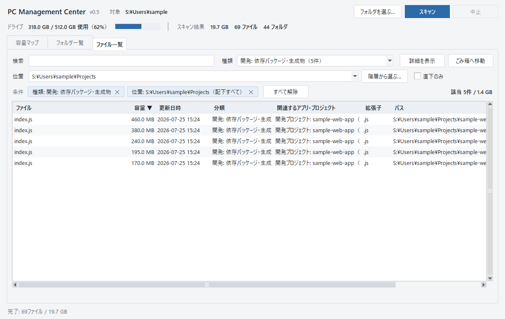
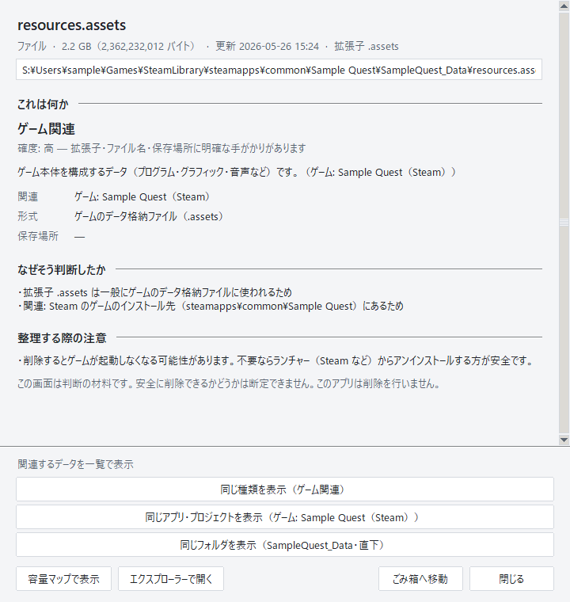
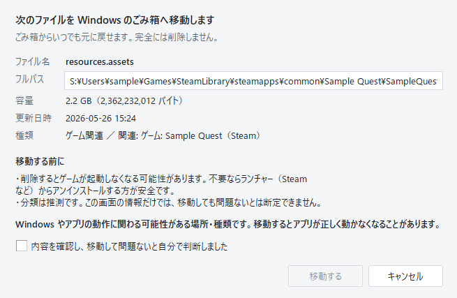

容量を使っているファイルの「正体」を
確かめてから整理する
大きなファイルを見つけても、名前だけでは何のデータか分からず消せない——。 PC管理センターは、ファイルの種類・関連するアプリやプロジェクト・そう判断した理由を表示し、 確かめたうえで不要なものを Windows のごみ箱へ移せるアプリです。
Windows 版をダウンロード
ダウンロードは公開準備中です。入手方法
{kind=link}

使い方
-
1容量を見る
調べたいフォルダを選んで「スキャン」。容量マップで、どのフォルダが容量を使っているかを面積で確認します。四角をクリックすると中へ進めます。

-
2種類と場所で絞る
ファイル一覧で「種類」（動画・インストーラー・キャッシュ・開発の依存パッケージなど）と「位置」（フォルダ）を組み合わせて絞り込みます。容量や更新日時で並べ替えもできます。

-
3詳細で正体を確かめる
詳細画面には「これは何か」（種類・確度・関連先）、「なぜそう判断したか」、「整理する際の注意」が順に表示されます。
例：
resources.assetsという名前だけでは分かりませんが、保存場所と拡張子から「Steam のゲームのデータ」と判断した理由が示されます。
-
4確認してごみ箱へ移す
確認画面で名前・場所・容量・種類を見直し、「移動する」を押したときだけ Windows のごみ箱へ移します。完全削除はせず、ごみ箱から元に戻せます。
Windows やアプリの動作に関わる可能性があるものは、確認のチェックを入れるまで移動できません。Windows フォルダや Program Files などは対象外です。

{kind=link}
{kind=link}
{kind=link}
{kind=link}
入手方法
公開準備中
インストーラーのダウンロード先は準備中です。公開後、このページからダウンロードできるようになります。
- 対応環境
- Windows 10 / 11（64 ビット）
- 必要なもの
- インストーラーだけで使えます。Python などを別途入れる必要はありません。
- インストール
- ダウンロードしたインストーラーを実行します。管理者権限は不要で、使っているユーザーにだけインストールされます。起動はスタートメニューの「PC管理センター」から。
- アンインストール
- Windows の「設定 > アプリ > インストールされているアプリ」から削除できます。
ご利用の前に
- 分類には推定が含まれます。拡張子・保存場所・同じフォルダにあるファイルなどの手がかりから判断し、確度（高・推定・不明）を添えて表示します。特定できないものは「種類は不明」と表示します。
- 移動する前に、対象をご自身で確認してください。アプリは判断の材料を示すだけで、移動して問題ないかどうかは断定しません。
- 自動で削除することはありません。操作は「ごみ箱へ移動」のみで、ごみ箱から元に戻せます。